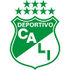
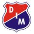
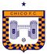
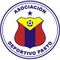

De: La Frikipedia, la enciclopedia extremadamente seria.
De: La Frikipedia, la enciclopedia extremadamente seria. De: La Frikipedia, la enciclopedia extremadamente seria.
La Liga Aguilucha (antes copa mostacho y putobon) es la Liga Sudamericana de furbo Colombiana manejada por la Dimeyor cuyo extraño sistema de clasificación permite al octavo lugar salir campeón, al primero no clasificar ni a un torneo de verano y a los representantes internacionales hacer el ridículo en copas internacionales como la Libertadores y la Sudacamericana al ganar el torneo de fin de año y luego vender a todos los jugadores a la liga argentina.
Esta mal llamada liga (liga con sistemas de eliminación, toquense los huevos) reúne a lo mejor del fútbol colombiano *sick* en una 18 equipos que tienen una nomina cambiante y una organización desastrosa (y la huella de unos narcos que sabían tanto de fútbol como los jugadores de la liga del congo), pero al menos eso evita un monopolio y el campeón es diferente cada 6 meses.
La liga colombiana surge en 1950 como respuesta alternativa al primitivo enfrentamiento entre molineros y liberales, puesto que la otra opción era agarrarse a machetazos hasta que uno de los bandos muriese, el primer campeon fue Santa Fe y gracias al paro de la liga argentina varias figuras fueron a parar a la primera A, como Alfredo Di Stefano (pretexto que usa Millonarios para dejarse masacrar anualmente por el Real Madrid) pero la crisis económica mato a varios equipos y solo quedaron sombras, durante 30 años mas lo único notable fue el año de Garrincha en el Atletico Junior y el cambio de nombre del Atletico Municipal a Atletico Nacional, pero luego llegarian los narcotraficantes que inyectarían dinero a los equipos para ganar varios campeonatos, siendo los mas beneficiados los equipos de Bogota (bueno,solo fue Millos), Medellin, Cali y la costa (es decir Junior), pero los capturaron y desde entonces la liga colombiana vale nada, exceptuando por el gigantesco, enorme triunfo del Once Caldas en la Copa Libertadores, y su valiente partido contra el Porto en la ultima copa intercontinental que se jugo (es una historia corta).
Estos son los equipos que se encuentran actualmente en primera division.
| Equipo | Escudo | Datos no tan importantes. |
|---|---|---|
| Ochonarios | Uno de los equipos con mas títulos hasta la fecha no había ganado ningún titulo hasta el 2012 después de una larga sequía de 26 años y muchas burlas, se autocomparan con River Plate y el Real Madrid por que han compartido un par de jugadores hace 50 años y tienen la segunda barra mas violenta del país, asi como el segundo puesto en Abrazateles. | |
| Autodenominado el rey de copas al ser el equipo con mas ligas (no, ignorad a Millonarios y América de Cali) y con mas Libertadores (no, ignorad al Once Caldas también, no existe), este equipo recibe el nada sospechoso dinero del hombre más rico del país "Papá Ardila", reúne 14 títulos y el primer puesto de Medellin y a todo lo que tenga que ver con los paisas. | ||
| Deportivo Cali |  |
8 títulos demuestran que el mayor logro de este equipo es ser el único con estadio propio financiado por las compañías de azúcar y los fabricantes de productos contra la diabetes (el sobrenombre de los azucareros no es en balde). Dado que su mayor rival ahora en la segunda B, su única ocupación es tocarse los huevos. |
| Junior |
El representante mas estable de la costa caribe y los fabricantes de espagueti ha tenido 7 títulos, actualmente lo mas llamativo de su equipo es que alguna vez Garrincha jugo allí pero de vez en cuando dan pelea en la liga y celebran títulos falsos. | |
| Deportivo Indepenmuela Pedellin |  |
Comparten estadio con el Atletico Nacional por lo que un requisito para ser aficionado de este equipo es tomar un curso intensivo de como odiar a "Municipal". Con 5 títulos su sobrenombre es el poderoso de la montaña, aunque "somos victimas de las circunstancias" también encaja como apodo (equipo chico). |
| Deportivo Tolima |  |
Equipo que desde la implementacion de los torneos cortos casi siempre gana la reclasificacion y es el mas alejado en la tabla del descenso ¿entonces porque solo tiene un titulo? porque la liga colombiana es un desastre, por eso (y porque sufren de amnesia en los cuadrangulares semifinales también, hay que ser honesto). |
| Once Caldas | Equipo que ha ganado pocos campeonatos nacionales, pero compensa eso con la única copa libertadores libre de sospechas que tiene Colombia, ademas de ser el único club que ha logrado unir a la afición colombiana en una sola voz, por desgracia ahora ya no destacan tanto (equipo chico). | |
| Chanda Fe | Después de 36 años sin ganar obtienen un titulo en el 2012 y otro en 2014 a manos de otro equipo chico (¿que sorprendente eh?), cuando se le acusa de narcotrafico su argumento es que no existe alguien tan estúpido para inyectarle millones de dolares a un equipo para que no gane nada durante eternidad y media. El que se burle de ellos todavía demuestra ser subnormal profundo. | |
| Boyacá Chicó |  |
Antaño era un equipo de Bogota hasta que la cruel falta de financiación lo obligo a mudarse a una tierra yerma y sin civilización llamada Tunja, donde ganarían su primer titulo. |
| Deportes Quindío | Nunca ha ganado nada pero se las arregla para mantener la categoría duranta mujo tiempo, es como esa etiqueta de las neveras que no se nota hasta que se cae (anda en la B). | |
| Deportivo Pasto |  |
Después de explicarles a los nativos de pasto que se podía jugar fútbol sin necesidad de tener un estadio con tribunas, este equipo entra a la categoría para salvaguardar el orgullo pastuso con una estrella solitaria. |
| Cúcuta Deportivo | Para empezar están jugando en Yopal, luego esta el hecho de ser diferentes invirtiendo el nombre en vez de ponerse deportivo Cúcuta, pero llegaron hace algun tiempo a semifinales de la libertadores, algo es algo. |
Las transmisiones por Radio son Ultramegarecontraarchimacroultramega malas ya que son puros comerciales que a nadie le interesan y solo comentan y narran los frikis y locos narradores si mucho cuando marcan un gol y si no hay goles casi 89.9 de los 90 minutos son solo de comerciales cunado hay goles 89.5 son de comerciales pero de verdad no oigan transmisiones de la Copa Mustang por Radio, Los frikis Narradores y Comentaristas encontraran con que comer lo muy muertos de hambre al igual que los trabajadores de la empresas que patrocinan las transmisiones por Radio Ya que no sirven para nada.
son tan malas o peores como la transmisiones por Radio esta vez los narradores hablan como locos sobre bla bla bla, y cosas sin sentido como, peina la pelota, pelota larga, o ya no hay nada que hacer , es obvio que no tiene sentido ya que las pelotas no tienen pelos y los jugadores no tienes peinetas en las botas, las pelotas no pueden cambiar de forma y volverse largas y sobre todo si hay algo que hacer dejar de ser un friki del furbo y marcharse del equipo y ganarse la vida haciendo algo mas productivo como pedir limosna.
Cuando los Narradores deportivos no saben que decir el comentarista empieza a hablar sobre cosas del equipo que a nadie le interesa y fingen saber de furbo.
| | |||||||||
|---|---|---|---|---|---|---|---|---|---|
|
Geografía
Personalidades
Furbo y furbolistas
Música
Política
Tipos de colombiano
Otros
|
Autor(es):